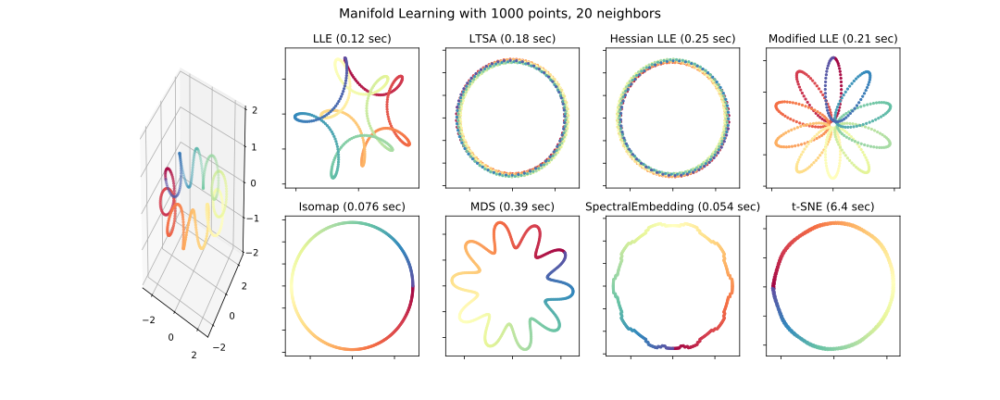
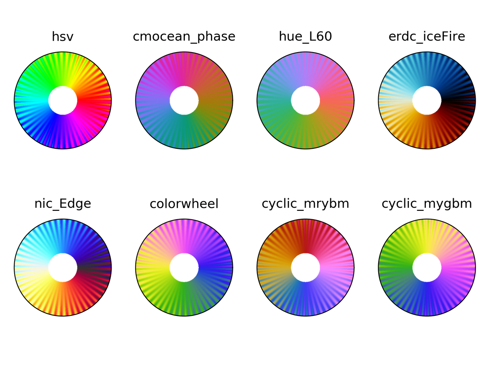

Cyclic colormaps comparison
I started this post looking for a diffusion map on Python, that I didn't find. Then I continued following an example on manifold learning by Jake Vanderplas on a different dataset. It worked nicely,
{kind=link}
but the colormap used is Spectral, that is divergent. This made me think about using a cyclic colormap, and ended up in this StackOverflow question. And I decided to compare some cyclic colormaps.
I picked up colormaps from different sources
-
phase
-
hue_L60
erdc_iceFire
nic_Edge
-
colorwheel
cyclic_mrybm_35_75_c68
cyclic_mygbm_30_95_c78
and, of course, hsv. You can download the colormaps in text
format from here.
Comparison
For all the examples below the following imports are done:
from __future__ import division, print_function import numpy as np import matplotlib.pyplot as plt from matplotlib.colors import LinearSegmentedColormap from colorspacious import cspace_convert
Color map test image
Peter Kovesi proposed a way to compare cyclic colormaps on a paper on 2015. It consists of a spiral ramp with an undulation. In polar coordinates it reads
with \(A\) the amplitude of the oscilation, \(\rho\) the normalized radius in [0, 1], \(p\) a positive number, and \(n\) the number of cycles.
And the following function creates the grid in Python
def circle_sine_ramp(r_max=1, r_min=0.3, amp=np.pi/5, cycles=50, power=2, nr=50, ntheta=1025): r, t = np.mgrid[r_min:r_max:nr*1j, 0:2*np.pi:ntheta*1j] r_norm = (r - r_min)/(r_max - r_min) vals = amp * r_norm**power * np.sin(cycles*t) + t vals = np.mod(vals, 2*np.pi) return t, r, vals
The following is the result
Colorblindness test
t, r, vals = circle_sine_ramp(cycles=0) cmaps = ["hsv", "cmocean_phase", "hue_L60", "erdc_iceFire", "nic_Edge", "colorwheel", "cyclic_mrybm", "cyclic_mygbm"] severity = [0, 50, 50, 50] for colormap in cmaps: data = np.loadtxt(colormap + ".txt") fig = plt.figure() for cont in range(4): cvd_space = {"name": "sRGB1+CVD", "cvd_type": cvd_type[cont], "severity": severity[cont]} data2 = cspace_convert(data, cvd_space, "sRGB1") data2 = np.clip(data2, 0, 1) cmap = LinearSegmentedColormap.from_list('my_colormap', data2) ax = plt.subplot(2, 2, 1 + cont, projection="polar") ax.pcolormesh(t, r, vals, cmap=cmap) ax.set_xticks([]) ax.set_yticks([]) plt.suptitle(colormap) plt.tight_layout() plt.savefig(colormap + ".png", dpi=300)
hsv colormap comparison for different color vision deficiencies.
Phase colormap comparison for different color vision deficiencies.
hue_L60 colormap comparison for different color vision deficiencies.
erdc_iceFire colormap comparison for different color vision deficiencies.
nic_Edge colormap comparison for different color vision deficiencies.
Colorwheel colormap comparison for different color vision deficiencies.
Cyclic_mrybm colormap comparison for different color vision deficiencies.
Cyclic_mygbm colormap comparison for different color vision deficiencies.
Randomly generated cyclic colormaps
What if we generate some random colormaps that are cyclic? How would they look like?
Following are the snippet and resulting colormaps.
from __future__ import division, print_function import numpy as np from mpl_toolkits.mplot3d import Axes3D import matplotlib.pyplot as plt from matplotlib.colors import LinearSegmentedColormap # Next line to silence pyflakes. This import is needed. Axes3D plt.close("all") fig = plt.figure() fig2 = plt.figure() nx = 4 ny = 4 azimuths = np.arange(0, 361, 1) zeniths = np.arange(30, 70, 1) values = azimuths * np.ones((30, 361)) for cont in range(nx * ny): np.random.seed(seed=cont) rad = np.random.uniform(0.1, 0.5) center = np.random.uniform(rad, 1 - rad, size=(3, 1)) mat = np.random.rand(3, 3) rot_mat, _ = np.linalg.qr(mat) t = np.linspace(0, 2*np.pi, 256) x = rad*np.cos(t) y = rad*np.sin(t) z = 0.0*np.cos(t) X = np.vstack((x, y, z)) X = rot_mat.dot(X) + center ax = fig.add_subplot(ny, nx, 1 + cont, projection='polar') cmap = LinearSegmentedColormap.from_list('my_colormap', X.T) ax.pcolormesh(azimuths*np.pi/180.0, zeniths, values, cmap=cmap) ax.set_xticks([]) ax.set_yticks([]) ax2 = fig2.add_subplot(ny, nx, 1 + cont, projection='3d') ax2.plot(X[0, :], X[1, :], X[2, :]) ax2.set_xlim(0, 1) ax2.set_ylim(0, 1) ax2.set_zlim(0, 1) ax2.view_init(30, -60) ax2.set_xticks([0, 0.5, 1.0]) ax2.set_yticks([0, 0.5, 1.0]) ax2.set_zticks([0, 0.5, 1.0]) ax2.set_xticklabels([]) ax2.set_yticklabels([]) ax2.set_zticklabels([]) fig.savefig("random_cmaps.png", dpi=300, transparent=True) fig2.savefig("random_cmaps_traj.svg", transparent=True)
16 randomly generated colormaps.
Trajectories in RGB space for the randomly generated colormaps.
A good idea would be to take these colormaps and optimize some perceptual parameters such as lightness to get some usable ones.
Conclusions
I probably would use phase, colorwheel, or mrybm in the
future.
Initial image using phase.
Initial image using colorwheel.
Initial image using mrybm.
References
Peter Kovesi. Good Colour Maps: How to Design Them. arXiv:1509.03700 [cs.GR] 2015
Comments
Comments powered by Disqus